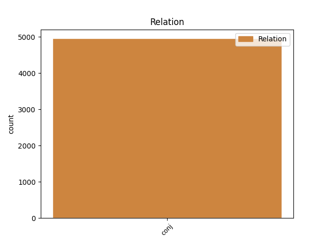
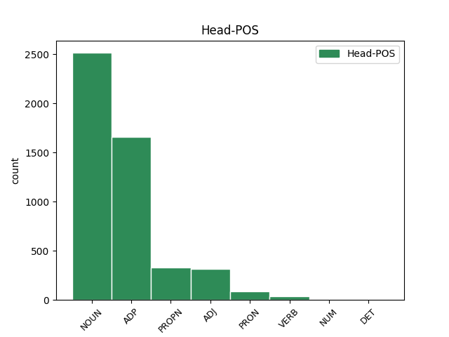
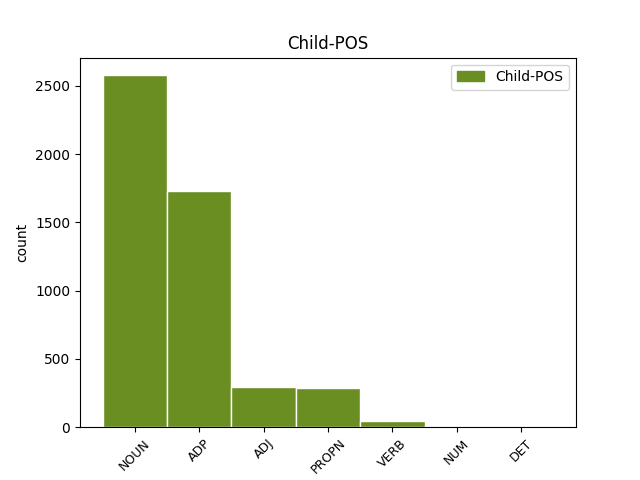

Distribution of features within this leaf



Agreement Rules sorted by frequency.
- When the dependent token is the conjunct(conj) of the head token, and the dependent token is NOUN.
1 Prin _ _ _ _ 0 _ _ _
2 obștească _ _ _ _ 0 _ _ _
3 chibzuire _ _ _ _ 0 _ _ _
4 ce _ _ _ _ 0 _ _ _
5 s _ _ _ _ 0 _ _ _
6 -au _ _ _ _ 0 _ _ _
7 făcut _ _ _ _ 0 _ _ _
8 în _ _ _ _ 0 _ _ _
9 scris _ _ _ _ 0 _ _ _
10 prin _ _ _ _ 0 _ _ _
11 Anafora _ _ _ _ 0 _ _ _
12 de _ _ _ _ 0 _ _ _
13 sfinția _ _ _ _ 0 _ _ _
14 lor _ _ _ _ 0 _ _ _
15 Părinți _ _ _ _ 0 _ _ _
16 Arhierei _ _ _ _ 0 _ _ _
17 și _ _ _ _ 0 _ _ _
18 de _ _ _ _ 0 _ _ _
19 Dumnealor _ _ _ _ 0 _ _ _
20 cinstiții _ _ _ _ 0 _ _ _
21 și _ _ _ _ 0 _ _ _
22 credincioșii _ _ _ _ 0 _ _ _
23 Boerii _ _ _ _ 0 _ _ _
24 Veliți _ _ _ _ 0 _ _ _
25 ai _ _ _ _ 0 _ _ _
26 divanului _ _ _ _ 0 _ _ _
27 Domnii _ _ _ _ 0 _ _ _
28 meale _ _ _ _ 0 _ _ _
29 , _ _ _ _ 0 _ _ _
30 Halea hale NOUN Ncmsrn Case=Acc,Nom|Definite=Ind|Gender=Masc|Number=Sing 0 _ _ _
31 și _ _ _ _ 0 _ _ _
32 mazilii mazil NOUN Ncmpry Case=Acc,Nom|Definite=Def|Gender=Masc|Number=Plur 30 conj _ ref=COMPLETARE.9|SpaceAfter=No
33 . _ _ _ _ 0 _ _ _
1 Care _ _ _ _ 0 _ _ _
2 s _ _ _ _ 0 _ _ _
3 -au _ _ _ _ 0 _ _ _
4 întărit _ _ _ _ 0 _ _ _
5 și _ _ _ _ 0 _ _ _
6 de _ _ _ _ 0 _ _ _
7 Domnia _ _ _ _ 0 _ _ _
8 mea _ _ _ _ 0 _ _ _
9 legiuindu _ _ _ _ 0 _ _ _
10 -să _ _ _ _ 0 _ _ _
11 și _ _ _ _ 0 _ _ _
12 aceaste _ _ _ _ 0 _ _ _
13 Ponturi _ _ _ _ 0 _ _ _
14 , _ _ _ _ 0 _ _ _
15 adăogat _ _ _ _ 0 _ _ _
16 în _ _ _ _ 0 _ _ _
17 pravela _ _ _ _ 0 _ _ _
18 pămîntului _ _ _ _ 0 _ _ _
19 , _ _ _ _ 0 _ _ _
20 supt _ _ _ _ 0 _ _ _
21 peceatea _ _ _ _ 0 _ _ _
22 Domnii _ _ _ _ 0 _ _ _
23 meale _ _ _ _ 0 _ _ _
24 precum _ _ _ _ 0 _ _ _
25 să _ _ _ _ 0 _ _ _
26 arată _ _ _ _ 0 _ _ _
27 mai _ _ _ _ 0 _ _ _
28 sus _ _ _ _ 0 _ _ _
29 , _ _ _ _ 0 _ _ _
30 care _ _ _ _ 0 _ _ _
31 s _ _ _ _ 0 _ _ _
32 -au _ _ _ _ 0 _ _ _
33 și _ _ _ _ 0 _ _ _
34 publicarisit _ _ _ _ 0 _ _ _
35 prin prin ADP Spca AdpType=Prep|Case=Acc|Compound=Yes 0 _ _ _
36 toate _ _ _ _ 0 _ _ _
37 Judecătoriile _ _ _ _ 0 _ _ _
38 din _ _ _ _ 0 _ _ _
39 Domneasca _ _ _ _ 0 _ _ _
40 noastră _ _ _ _ 0 _ _ _
41 Ţară _ _ _ _ 0 _ _ _
42 , _ _ _ _ 0 _ _ _
43 și _ _ _ _ 0 _ _ _
44 cătră către ADP Spsa AdpType=Prep|Case=Acc 35 conj _ ref=COMPLETARE.10
45 toți _ _ _ _ 0 _ _ _
46 lăcuitorii _ _ _ _ 0 _ _ _
47 de _ _ _ _ 0 _ _ _
48 obște _ _ _ _ 0 _ _ _
49 ca _ _ _ _ 0 _ _ _
50 să _ _ _ _ 0 _ _ _
51 fie _ _ _ _ 0 _ _ _
52 știute _ _ _ _ 0 _ _ _
53 și _ _ _ _ 0 _ _ _
54 să _ _ _ _ 0 _ _ _
55 se _ _ _ _ 0 _ _ _
56 urmeaze _ _ _ _ 0 _ _ _
57 făr _ _ _ _ 0 _ _ _
58 de _ _ _ _ 0 _ _ _
59 strămutare _ _ _ _ 0 _ _ _
60 . _ _ _ _ 0 _ _ _
1 Prin _ _ _ _ 0 _ _ _
2 obștească _ _ _ _ 0 _ _ _
3 chibzuire _ _ _ _ 0 _ _ _
4 ce _ _ _ _ 0 _ _ _
5 s _ _ _ _ 0 _ _ _
6 -au _ _ _ _ 0 _ _ _
7 făcut _ _ _ _ 0 _ _ _
8 în _ _ _ _ 0 _ _ _
9 scris _ _ _ _ 0 _ _ _
10 prin _ _ _ _ 0 _ _ _
11 Anafora _ _ _ _ 0 _ _ _
12 de _ _ _ _ 0 _ _ _
13 sfinția _ _ _ _ 0 _ _ _
14 lor _ _ _ _ 0 _ _ _
15 Părinți _ _ _ _ 0 _ _ _
16 Arhierei _ _ _ _ 0 _ _ _
17 și _ _ _ _ 0 _ _ _
18 de _ _ _ _ 0 _ _ _
19 Dumnealor _ _ _ _ 0 _ _ _
20 cinstiții cinstit ADJ Afpmpry Case=Acc,Nom|Definite=Def|Degree=Pos|Gender=Masc|Number=Plur 0 _ _ _
21 și _ _ _ _ 0 _ _ _
22 credincioșii credincios ADJ Afpmpry Case=Acc,Nom|Definite=Def|Degree=Pos|Gender=Masc|Number=Plur 20 conj _ ref=COMPLETARE.9
23 Boerii _ _ _ _ 0 _ _ _
24 Veliți _ _ _ _ 0 _ _ _
25 ai _ _ _ _ 0 _ _ _
26 divanului _ _ _ _ 0 _ _ _
27 Domnii _ _ _ _ 0 _ _ _
28 meale _ _ _ _ 0 _ _ _
29 , _ _ _ _ 0 _ _ _
30 Halea _ _ _ _ 0 _ _ _
31 și _ _ _ _ 0 _ _ _
32 mazilii _ _ _ _ 0 _ _ _
33 . _ _ _ _ 0 _ _ _
1 Păntru _ _ _ _ 0 _ _ _
2 păcatul _ _ _ _ 0 _ _ _
3 lăcomiei _ _ _ _ 0 _ _ _
4 scrie _ _ _ _ 0 _ _ _
5 în _ _ _ _ 0 _ _ _
6 Cartea _ _ _ _ 0 _ _ _
7 Veache _ _ _ _ 0 _ _ _
8 că _ _ _ _ 0 _ _ _
9 Dumnezeu _ _ _ _ 0 _ _ _
10 , _ _ _ _ 0 _ _ _
11 cînd _ _ _ _ 0 _ _ _
12 făcu _ _ _ _ 0 _ _ _
13 pre _ _ _ _ 0 _ _ _
14 omul _ _ _ _ 0 _ _ _
15 , _ _ _ _ 0 _ _ _
16 pre _ _ _ _ 0 _ _ _
17 Adam Adam PROPN Npmsrn Case=Acc,Nom|Definite=Ind|Gender=Masc|Number=Sing 0 _ _ _
18 și _ _ _ _ 0 _ _ _
19 Eva Eva PROPN Npfsry Case=Acc,Nom|Definite=Def|Gender=Fem|Number=Sing 17 conj _ SpaceAfter=No
20 , _ _ _ _ 0 _ _ _
21 și _ _ _ _ 0 _ _ _
22 -i _ _ _ _ 0 _ _ _
23 puse _ _ _ _ 0 _ _ _
24 în _ _ _ _ 0 _ _ _
25 raiu _ _ _ _ 0 _ _ _
26 și _ _ _ _ 0 _ _ _
27 lă _ _ _ _ 0 _ _ _
28 deade _ _ _ _ 0 _ _ _
29 voie _ _ _ _ 0 _ _ _
30 să _ _ _ _ 0 _ _ _
31 facă _ _ _ _ 0 _ _ _
32 ce _ _ _ _ 0 _ _ _
33 vor _ _ _ _ 0 _ _ _
34 vrea _ _ _ _ 0 _ _ _
35 , _ _ _ _ 0 _ _ _
36 numai _ _ _ _ 0 _ _ _
37 să _ _ _ _ 0 _ _ _
38 nu _ _ _ _ 0 _ _ _
39 se _ _ _ _ 0 _ _ _
40 tinză _ _ _ _ 0 _ _ _
41 spre _ _ _ _ 0 _ _ _
42 lemnu _ _ _ _ 0 _ _ _
43 cela _ _ _ _ 0 _ _ _
44 ce _ _ _ _ 0 _ _ _
45 -i _ _ _ _ 0 _ _ _
46 învăță _ _ _ _ 0 _ _ _
47 Dumnezeu _ _ _ _ 0 _ _ _
48 . _ _ _ _ 0 _ _ _
1 Care _ _ _ _ 0 _ _ _
2 după _ _ _ _ 0 _ _ _
3 învoială _ _ _ _ 0 _ _ _
4 în _ _ _ _ 0 _ _ _
5 scris _ _ _ _ 0 _ _ _
6 , _ _ _ _ 0 _ _ _
7 sau _ _ _ _ 0 _ _ _
8 izbrănire _ _ _ _ 0 _ _ _
9 , _ _ _ _ 0 _ _ _
10 să _ _ _ _ 0 _ _ _
11 va _ _ _ _ 0 _ _ _
12 judeca _ _ _ _ 0 _ _ _
13 pentru _ _ _ _ 0 _ _ _
14 aceiași _ _ _ _ 0 _ _ _
15 pricină _ _ _ _ 0 _ _ _
16 pentru _ _ _ _ 0 _ _ _
17 care _ _ _ _ 0 _ _ _
18 s _ _ _ _ 0 _ _ _
19 -au _ _ _ _ 0 _ _ _
20 învoit _ _ _ _ 0 _ _ _
21 , _ _ _ _ 0 _ _ _
22 ori _ _ _ _ 0 _ _ _
23 s _ _ _ _ 0 _ _ _
24 -au _ _ _ _ 0 _ _ _
25 răfuit _ _ _ _ 0 _ _ _
26 , _ _ _ _ 0 _ _ _
27 și _ _ _ _ 0 _ _ _
28 va _ _ _ _ 0 _ _ _
29 pierde _ _ _ _ 0 _ _ _
30 judecata _ _ _ _ 0 _ _ _
31 , _ _ _ _ 0 _ _ _
32 acela _ _ _ _ 0 _ _ _
33 să _ _ _ _ 0 _ _ _
34 plătească _ _ _ _ 0 _ _ _
35 ceilalte _ _ _ _ 0 _ _ _
36 părți _ _ _ _ 0 _ _ _
37 cheltuiala _ _ _ _ 0 _ _ _
38 judecății _ _ _ _ 0 _ _ _
39 , _ _ _ _ 0 _ _ _
40 și _ _ _ _ 0 _ _ _
41 cine _ _ _ _ 0 _ _ _
42 să _ _ _ _ 0 _ _ _
43 va _ _ _ _ 0 _ _ _
44 judeca _ _ _ _ 0 _ _ _
45 după _ _ _ _ 0 _ _ _
46 învoială _ _ _ _ 0 _ _ _
47 , _ _ _ _ 0 _ _ _
48 sau _ _ _ _ 0 _ _ _
49 răfuire _ _ _ _ 0 _ _ _
50 nescrisă scrie VERB Vmp--sf-z--r Case=Acc,Nom|Gender=Fem|Number=Sing|Polarity=Neg|VerbForm=Part 0 _ _ _
51 dar _ _ _ _ 0 _ _ _
52 dovedită dovedi VERB Vmp--sf-p--r Case=Acc,Nom|Gender=Fem|Number=Sing|Polarity=Pos|VerbForm=Part 50 conj _ ref=PART_V_CAP_3.12|SpaceAfter=No
53 , _ _ _ _ 0 _ _ _
54 și _ _ _ _ 0 _ _ _
55 -și _ _ _ _ 0 _ _ _
56 va _ _ _ _ 0 _ _ _
57 pierde _ _ _ _ 0 _ _ _
58 judecata _ _ _ _ 0 _ _ _
59 , _ _ _ _ 0 _ _ _
60 și _ _ _ _ 0 _ _ _
61 acela _ _ _ _ 0 _ _ _
62 să _ _ _ _ 0 _ _ _
63 plătească _ _ _ _ 0 _ _ _
64 cheltuiala _ _ _ _ 0 _ _ _
65 judecății _ _ _ _ 0 _ _ _
66 . _ _ _ _ 0 _ _ _
1 Cum _ _ _ _ 0 _ _ _
2 am _ _ _ _ 0 _ _ _
3 zice _ _ _ _ 0 _ _ _
4 tatăl _ _ _ _ 0 _ _ _
5 numai _ _ _ _ 0 _ _ _
6 , _ _ _ _ 0 _ _ _
7 sau _ _ _ _ 0 _ _ _
8 muma mamă NOUN Ncfsry Case=Acc,Nom|Definite=Def|Gender=Fem|Number=Sing 0 _ _ _
9 numai _ _ _ _ 0 _ _ _
10 , _ _ _ _ 0 _ _ _
11 sau _ _ _ _ 0 _ _ _
12 amîndoi amândoi NUM Mlmpr Case=Acc,Nom|Gender=Masc|Number=Plur|NumType=Card|PronType=Tot 8 conj _ ref=PART_IV_CAP_3b.18.2b
13 împreună _ _ _ _ 0 _ _ _
14 de _ _ _ _ 0 _ _ _
15 trăesc _ _ _ _ 0 _ _ _
16 , _ _ _ _ 0 _ _ _
17 să _ _ _ _ 0 _ _ _
18 protimisesc _ _ _ _ 0 _ _ _
19 din _ _ _ _ 0 _ _ _
20 moși _ _ _ _ 0 _ _ _
21 , _ _ _ _ 0 _ _ _
22 și _ _ _ _ 0 _ _ _
23 moșul _ _ _ _ 0 _ _ _
24 din _ _ _ _ 0 _ _ _
25 strămoși _ _ _ _ 0 _ _ _
26 , _ _ _ _ 0 _ _ _
27 și _ _ _ _ 0 _ _ _
28 cealelalte _ _ _ _ 0 _ _ _
29 . _ _ _ _ 0 _ _ _
1 Cînd _ _ _ _ 0 _ _ _
2 mulți _ _ _ _ 0 _ _ _
3 vor _ _ _ _ 0 _ _ _
4 pune _ _ _ _ 0 _ _ _
5 în _ _ _ _ 0 _ _ _
6 păstrare _ _ _ _ 0 _ _ _
7 lucru _ _ _ _ 0 _ _ _
8 de _ _ _ _ 0 _ _ _
9 -a _ _ _ _ 0 _ _ _
10 valma _ _ _ _ 0 _ _ _
11 , _ _ _ _ 0 _ _ _
12 cu _ _ _ _ 0 _ _ _
13 așăzămînt _ _ _ _ 0 _ _ _
14 ca _ _ _ _ 0 _ _ _
15 să _ _ _ _ 0 _ _ _
16 poată _ _ _ _ 0 _ _ _
17 da _ _ _ _ 0 _ _ _
18 păstrătoriul _ _ _ _ 0 _ _ _
19 fieșcăruia fieșcare PRON Pi3mso Case=Dat,Gen|Gender=Masc|Number=Sing|Person=3|PronType=Ind 0 _ _ _
20 ce- _ _ _ _ 0 _ _ _
21 l _ _ _ _ 0 _ _ _
22 va _ _ _ _ 0 _ _ _
23 cere _ _ _ _ 0 _ _ _
24 , _ _ _ _ 0 _ _ _
25 sau _ _ _ _ 0 _ _ _
26 tuturor tot DET Di3-po Case=Dat,Gen|Number=Plur|Person=3|PronType=Ind 19 conj _ ref=PART_III_CAP_22.15|SpaceAfter=No
27 , _ _ _ _ 0 _ _ _
28 atunci _ _ _ _ 0 _ _ _
29 să _ _ _ _ 0 _ _ _
30 urmează _ _ _ _ 0 _ _ _
31 după _ _ _ _ 0 _ _ _
32 tocmeală _ _ _ _ 0 _ _ _
33 . _ _ _ _ 0 _ _ _
Disagree Examples:
1 Și _ _ _ _ 0 _ _ _
2 nu _ _ _ _ 0 _ _ _
3 lăsă _ _ _ _ 0 _ _ _
4 nece _ _ _ _ 0 _ _ _
5 pre _ _ _ _ 0 _ _ _
6 unul _ _ _ _ 0 _ _ _
7 să _ _ _ _ 0 _ _ _
8 meargă _ _ _ _ 0 _ _ _
9 după _ _ _ _ 0 _ _ _
10 Sine _ _ _ _ 0 _ _ _
11 , _ _ _ _ 0 _ _ _
12 numai _ _ _ _ 0 _ _ _
13 Pătru _ _ _ _ 0 _ _ _
14 și _ _ _ _ 0 _ _ _
15 Iacov Iacob PROPN Npmsrn Case=Acc,Nom|Definite=Ind|Gender=Masc|Number=Sing 0 _ _ _
16 și _ _ _ _ 0 _ _ _
17 pre pe ADP Spsa AdpType=Prep|Case=Acc 15 conj _ ref=MARC5.37
18 Ioan _ _ _ _ 0 _ _ _
19 , _ _ _ _ 0 _ _ _
20 fratele _ _ _ _ 0 _ _ _
21 lui _ _ _ _ 0 _ _ _
22 Iacov _ _ _ _ 0 _ _ _
23 . _ _ _ _ 0 _ _ _
1 Și _ _ _ _ 0 _ _ _
2 strînsără _ _ _ _ 0 _ _ _
3 fărmituri fărâmitură NOUN Ncfprn Case=Acc,Nom|Definite=Ind|Gender=Fem|Number=Plur 0 _ _ _
4 doaospăzeace _ _ _ _ 0 _ _ _
5 corfe _ _ _ _ 0 _ _ _
6 pline _ _ _ _ 0 _ _ _
7 și _ _ _ _ 0 _ _ _
8 den din ADP Spca AdpType=Prep|Case=Acc|Compound=Yes 3 conj _ ref=MARC6.43
9 pești _ _ _ _ 0 _ _ _
10 . _ _ _ _ 0 _ _ _
1 Și _ _ _ _ 0 _ _ _
2 să _ _ _ _ 0 _ _ _
3 arătă _ _ _ _ 0 _ _ _
4 lor _ _ _ _ 0 _ _ _
5 Ilia Ilie PROPN Npmsrn Case=Acc,Nom|Definite=Ind|Gender=Masc|Number=Sing 0 _ _ _
6 cu cu ADP Spsa AdpType=Prep|Case=Acc 5 conj _ ref=MARC9.4
7 Moisi _ _ _ _ 0 _ _ _
8 , _ _ _ _ 0 _ _ _
9 carii _ _ _ _ 0 _ _ _
10 grăiia _ _ _ _ 0 _ _ _
11 cu _ _ _ _ 0 _ _ _
12 Iisus _ _ _ _ 0 _ _ _
13 . _ _ _ _ 0 _ _ _
1 Ca ca ADP Spsa AdpType=Prep|Case=Acc 0 _ _ _
2 să _ _ _ _ 0 _ _ _
3 nu _ _ _ _ 0 _ _ _
4 ia _ _ _ _ 0 _ _ _
5 o _ _ _ _ 0 _ _ _
6 sută _ _ _ _ 0 _ _ _
7 de _ _ _ _ 0 _ _ _
8 ori _ _ _ _ 0 _ _ _
9 mai _ _ _ _ 0 _ _ _
10 mult _ _ _ _ 0 _ _ _
11 acum _ _ _ _ 0 _ _ _
12 în _ _ _ _ 0 _ _ _
13 ceastă _ _ _ _ 0 _ _ _
14 vreame _ _ _ _ 0 _ _ _
15 casele _ _ _ _ 0 _ _ _
16 și _ _ _ _ 0 _ _ _
17 frații frate NOUN Ncmpry Case=Acc,Nom|Definite=Def|Gender=Masc|Number=Plur 1 conj _ ref=MARC10.30
18 și _ _ _ _ 0 _ _ _
19 surorile _ _ _ _ 0 _ _ _
20 și _ _ _ _ 0 _ _ _
21 mumele _ _ _ _ 0 _ _ _
22 și _ _ _ _ 0 _ _ _
23 feciorii _ _ _ _ 0 _ _ _
24 și _ _ _ _ 0 _ _ _
25 uricurele _ _ _ _ 0 _ _ _
26 și _ _ _ _ 0 _ _ _
27 cu _ _ _ _ 0 _ _ _
28 supărările _ _ _ _ 0 _ _ _
29 în _ _ _ _ 0 _ _ _
30 veacul _ _ _ _ 0 _ _ _
31 care _ _ _ _ 0 _ _ _
32 va _ _ _ _ 0 _ _ _
33 să _ _ _ _ 0 _ _ _
34 vie _ _ _ _ 0 _ _ _
35 viiața _ _ _ _ 0 _ _ _
36 de _ _ _ _ 0 _ _ _
37 veaci _ _ _ _ 0 _ _ _
38 . _ _ _ _ 0 _ _ _
1 Dragostea dragoste NOUN Ncfsry Case=Acc,Nom|Definite=Def|Gender=Fem|Number=Sing 0 _ _ _
2 lui _ _ _ _ 0 _ _ _
3 Dumnezău _ _ _ _ 0 _ _ _
4 și _ _ _ _ 0 _ _ _
5 a _ _ _ _ 0 _ _ _
6 priiatinilor prieten NOUN Ncmpoy Case=Dat,Gen|Definite=Def|Gender=Masc|Number=Plur 1 conj _ ref=MARC12.33.content
7 mai _ _ _ _ 0 _ _ _
8 mare _ _ _ _ 0 _ _ _
9 -i _ _ _ _ 0 _ _ _
10 decît _ _ _ _ 0 _ _ _
11 jărtva _ _ _ _ 0 _ _ _
12 . _ _ _ _ 0 _ _ _